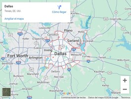

Gira internacional
La gira internacional de Glass Animals comenzó en Julio del 2024, luego del lanzamiento de su último álbum "I love you so f***ing much" (19/08/24). En esta sección de la página web se muestra el recorrido de la banda por los diferentes países y Estados. El tour oficialmente comenzó en Inglaterra, visitando varias ciudades, luego hicieron shows en Francia. Actualmente están en Estados Unidos cruzando por los diferentes Estados y conociendo a sus fans. En el futuro estarán visitando Alemania, Irlanda, México, Japón, Países Bajos, entre otros.
